Что делает каждая кнопка¶
Здесь разобран каждый элемент панели QC Validator, ниже — таблица всех проверок, а в конце показано, как проверки выглядят на настоящей модели.
Верх панели¶
То, что видно всегда: область действия, кнопка запуска и полоса состояния над ними.
Scope¶
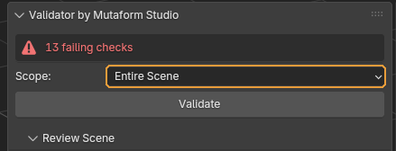
Какие объекты попадут в проверку.
Когда пригодится. Оставляйте Selection, пока работаете над одним ассетом: на тяжёлой сцене это заметно быстрее. Visible Scene и Entire Scene нужны перед сдачей, когда надо убедиться, что в файле не осталось забытого мусора. Разница между ними одна: Entire Scene смотрит и скрытые объекты тоже.
По умолчанию: Selection — только выделенные меши.
Validate¶
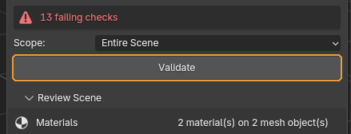
Прогоняет все включённые проверки и заполняет список результатов.
Когда пригодится. После каждого заметного шага работы, а не один раз перед сдачей: чем раньше поймана проблема, тем дешевле её чинить.
Что получится. Полоса состояния над кнопкой становится зелёной («All checks passed») или красной с числом блокирующих проблем. Ниже, в свитке Results, появляется список.
Обратите внимание
В новом файле чек-листа ещё нет, и вместо Validate панель показывает кнопку Initialize Checklist. Нажмите её один раз — проверки заведутся из активного проекта, и дальше кнопка больше не появится.
Results — разбор найденного¶
Список проблем после прогона. Пока Validate не нажимали, свиток пустой и сообщает об этом.
Фильтр списка и Fix All¶
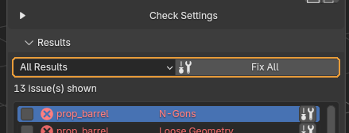
Слева — чем ограничить список на экране, справа — кнопка «починить всё, что чинится».
Когда пригодится. Фильтр удобен на длинном списке: Fixable Only оставляет то, что закроется автоматически, и сразу видно, сколько работы останется руками. Фильтр влияет только на показ — вердикт от него не меняется.
Что получится. Fix All идёт по списку и чинит всё подряд, показывая прогресс. На тяжёлой сцене это не мгновенно.
По умолчанию: All Results — показываются все строки.
Обратите внимание
После Fix All обязательно запустите Validate заново. Часть исправлений меняет геометрию, и на изменённой модели могут вылезти новые замечания — например, триангуляция n-гонов способна породить вырожденные грани.
Список проблем¶
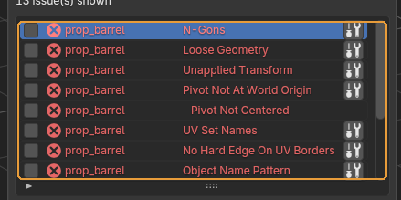
Каждая строка — одна проблема на одном объекте: имя объекта, название проверки и значок уровня.
Когда пригодится. Кликайте по строкам подряд. Клик не просто выделяет строку: аддон выделяет проблемный объект и переходит в режим редактирования с выделенными вершинами, рёбрами или полигонами — теми самыми, из-за которых проверка сработала.
Обратите внимание
Красный значок — Fail, блокирует сдачу. Серый перечёркнутый глаз — заглушённая строка, она на вердикт не влияет. Уровень задаётся для каждой проверки отдельно в чек-листе.
Ignore / Select / Fix Me¶
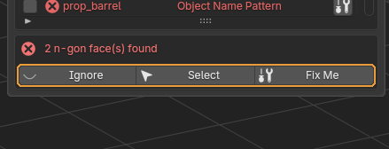
Действия над выбранной строкой. Над ними — текстовое пояснение, что именно нашла проверка.
Когда пригодится. Select возвращает выделение на проблемные элементы, если вы успели выделить что-то другое. Fix Me чинит только эту строку и появляется лишь у проверок, у которых автофикс есть. Ignore заглушает проблему.
Что получится. Заглушённая строка перестаёт влиять на вердикт и переживает повторный Validate: список заглушек хранится в сцене отдельно от результатов. Кнопка при этом меняется на Restore.
Обратите внимание
Заглушка привязана к паре «объект + проверка». Переименуете объект — она отвяжется, и проблема вернётся в список.
Checklist — что именно проверять¶
Набор проверок хранится в проекте и разложен по стадиям работы. Здесь же живут инструменты осмотра развёртки, но появляются они не всегда — см. ниже.
Строка Project¶
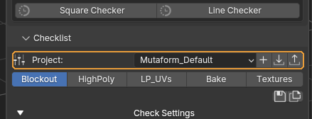
Выбор проекта и три кнопки справа: сохранить текущий набор как проект, загрузить проект из файла, выгрузить в файл.
Когда пригодится. Проект — это набор стадий. Свой проект заводят, когда правила отличаются от студийных: другое именование, другие допуски. Чтобы передать набор другому художнику, выгружаете в JSON, он у себя загружает.
Обратите внимание
Встроенный проект перезаписать нельзя — сохранение всегда создаёт пользовательскую копию в папке расширения. Так студийный набор не испортить случайно.
Кнопки стадий¶
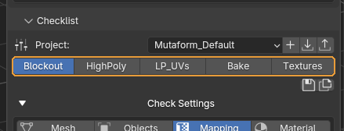
Ряд кнопок под строкой проекта. Каждая — сохранённый набор: какие проверки включены, с каким уровнем и какими параметрами.
Когда пригодится. Переключайте по мере работы. Стадия — это не «уровень строгости», а набор под конкретный этап: на Blockout включено 14 проверок, на HighPoly — 9, на LP_UVs — 25. HighPoly нарочно самая свободная: на скульпте незамкнутая сетка, вырожденные грани и вогнутые полигоны в порядке вещей, и придираться к ним рано. Требовать чистую развёртку на блокауте так же бессмысленно, а перед текстурированием — обязательно.
Что получится. Нажатие сразу применяет стадию: галочки в чек-листе переставляются, параметры подставляются. Активная стадия остаётся вдавленной.
Обратите внимание
Стадия LP_UVs — особая: только на ней в панели появляются три инструмента осмотра развёртки. На других стадиях их просто нет. Стадия переключает только те проверки, что в ней перечислены; остальные остаются как были. Во встроенном проекте перечислены все 27, поэтому переключение честно гасит лишнее и не тянет включённое с прошлой стадии. В своём проекте следите за этим сами: проверка, которую стадия не упоминает, останется в том состоянии, в каком её застали.
Кнопки справа от стадий¶
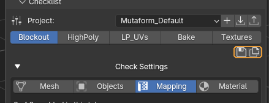
Мелкий ряд значков: записать текущее состояние чек-листа в стадию, сохранить весь проект копией, удалить стадию.
Когда пригодится. Настроили чек-лист под конкретную задачу и хотите вернуться к нему завтра — сохраните стадию.
Обратите внимание
Кнопка удаления есть только у пользовательских проектов: из встроенного стадию не убрать.
Check Settings¶
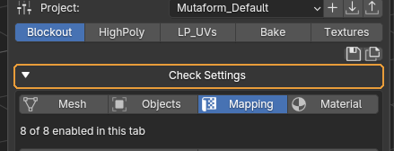
Раскрывает сам чек-лист.
Когда пригодится. Когда нужно включить или выключить отдельные проверки, поменять уровень или подкрутить параметр.
По умолчанию: свёрнуто
Обратите внимание
Это первое, обо что спотыкаются новички: пока строка свёрнута, проверок в панели не видно вообще — только выбор проекта и стадии. Кажется, что чек-листа нет.
Вкладки Mesh / Objects / Mapping / Material¶
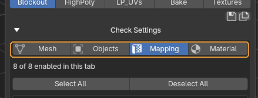
Делят проверки по типу: геометрия, объекты и трансформации, развёртка, материалы.
Когда пригодится. Просто чтобы не листать 26 строк подряд. Под вкладками написано, сколько проверок включено на текущей.
Обратите внимание
Вкладка меняет только показ. Validate всегда прогоняет все включённые проверки, а не только те, что открыты сейчас.
Select All / Deselect All¶
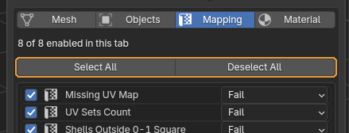
Включает или выключает разом все проверки текущей вкладки.
Когда пригодится. Быстрый способ собрать свой набор: снять всё и отметить нужное, вместо того чтобы гасить два десятка галочек по одной.
Список проверок¶
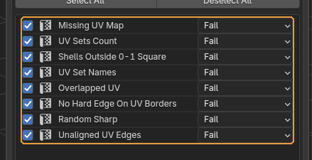
Галочка включает проверку, выпадающий список справа задаёт её уровень.
Когда пригодится. Уровень стоит менять чаще, чем выключать проверку. Fail блокирует сдачу, Info только сообщает. Если проверка в вашем пайплайне желательна, но не обязательна, переведите её в Info — так о ней хотя бы будет видно, а вердикт она не испортит.
Обратите внимание
Изменения относятся к текущей сцене. Чтобы они пережили файл, сохраните стадию.
Описание и параметры проверки¶
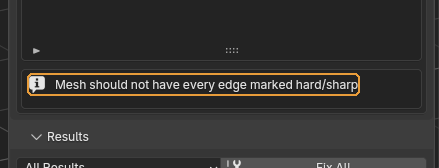
Коробка под списком: описание выбранной проверки и её настройки, если они у неё есть.
Когда пригодится. Сюда лезут, когда проверка ругается на то, что в вашем проекте нормально. Например, Object Name Pattern задаётся регулярным выражением — под своё именование меняется здесь.
Обратите внимание
У большинства проверок настроек нет, и коробка показывает только описание. Смысл параметров у каждой проверки свой — он указан в таблице ниже.
Инструменты осмотра развёртки¶
Три интерактивных инструмента: они ничего не пишут в результаты, а показывают состояние прямо в редакторе UV. Все три смотрят на один текстурный сет за раз — на грани активного материала — и перенаводятся следом, когда вы меняете активный слот.
Show Overlaps¶
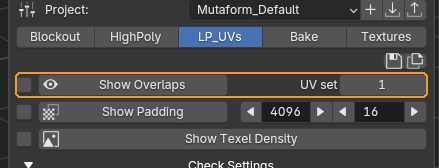
Подсвечивает в редакторе UV острова, налезающие друг на друга.
Когда пригодится. Когда проверка Overlapped UV сообщила о налезании, а найти его глазами не выходит. В списке результатов написано только «есть налезание» — а вот где именно, показывает этот инструмент.
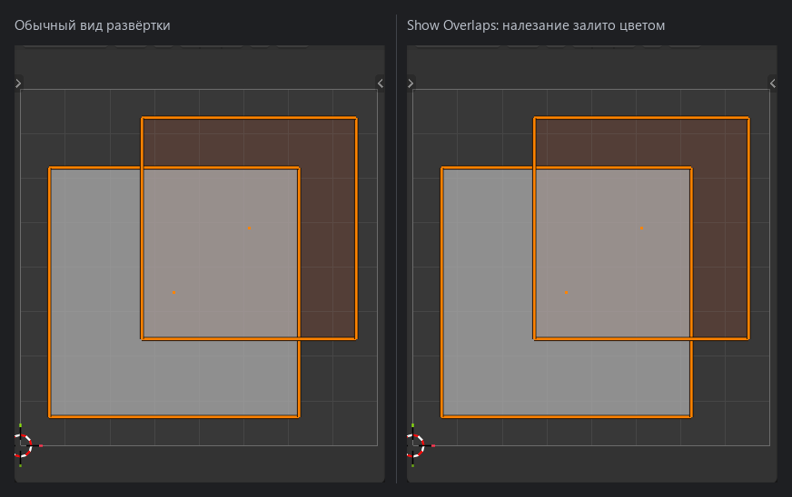
Обратите внимание
Галочка слева важнее, чем кажется. Без неё смотрится только активный объект; с ней — все видимые меши с тем же материалом, то есть всё, что попадёт в один атлас. Два объекта по отдельности могут быть чистыми и налезать друг на друга в общей развёртке — без этой галочки такое не находится. Смотрится один текстурный сет за раз: в счёт идут только грани активного материала, чужие острова рядом не показываются и налезанием не считаются. Переключите активный слот материала — осмотр перенаведётся на него на лету, выходить и заходить заново не нужно. Исключение — осмотр, открытый кликом по строке результата: он охватывает меш целиком, чтобы показанное совпало с тем, на что пожаловалась проверка. Активный слот такой осмотр не отслеживает. Поле UV set справа — номер набора, считая с единицы.
Show Padding¶
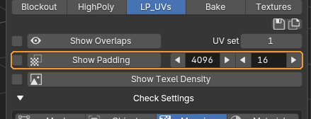
Показывает, во что превратятся отступы между островами при заданном размере текстуры.
Когда пригодится. До запекания, чтобы понять, не слипнутся ли соседние острова. Стрелками меняются два числа: слева размер текстуры, справа отступ в пикселях.
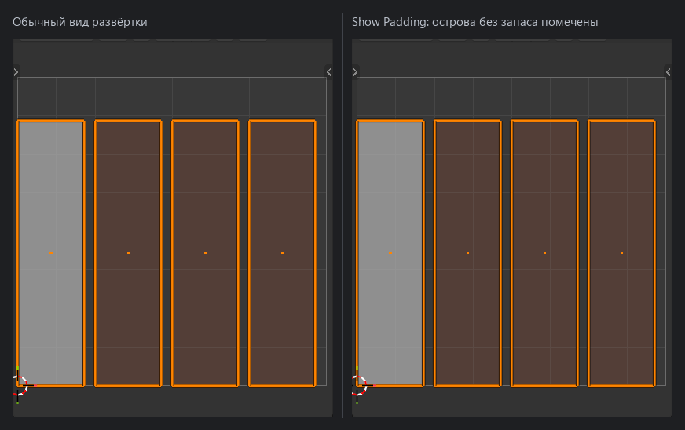
Обратите внимание
При смене размера текстуры отступ пересчитывается пропорционально — соотношение сохраняется, и не приходится пересчитывать в уме. Отступ меряется вокруг следа активного материала, а не вокруг меша: там, где его грани сходятся с гранями другого материала, проходит край острова. На мультиматериальной модели это и нужно — соседний материал уедет в свою текстуру и мешать не будет.
Show Texel Density¶
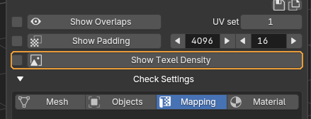
Красит объекты по плотности текселей.
Когда пригодится. Когда в сцене несколько ассетов и надо убедиться, что масштаб развёртки у них общий. Выбивающийся объект видно сразу по цвету — на текстуре это выглядело бы как разная чёткость деталей.
Обратите внимание
Цвет читается относительно средней плотности, а средняя считается только по граням активного материала. Второй материал на той же модели эталон на себя не тянет, так что сравнивать имеет смысл в пределах одного текстурного сета. Ровный цвет по всей модели означает, что по этому сету расхождений нет.
Review Scene — материалы и клетка¶
Свиток свёрнут по умолчанию. Внутри — разбор материалов по сцене и шахматная текстура для оценки развёртки.
Список материалов¶
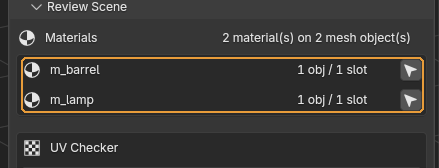
Все материалы в текущей области действия: сколько объектов и слотов использует каждый. У строки два действия — само имя материала и кнопка с иконкой развёртки справа.
Когда пригодится. Перед запеканием — понять, что попадёт в один атлас, и обойти материалы по очереди. Клик по имени выделяет объекты с этим материалом по всей сцене — не только те, что попали в Scope, чтобы забытый в стороне дубль не потерялся. Заодно у каждого выделенного этот материал становится активным слотом, а значит инструменты осмотра развёртки уже наведены на него. Кнопка справа — Review Material UVs. Она заводит многообъектный режим редактирования, в котором выделены только грани этого материала: в редакторе UV видно его развёртку и ничего лишнего. Повторное нажатие осмотр заканчивает.
Что получится. Пока осмотр идёт, кнопка вдавлена, а под списком стоит строка «Reviewing <имя материала>». Такая же появляется в панели Checklist — чтобы было видно, на что наведены оверлеи, даже когда список материалов свёрнут. По окончании возвращаются выделение, режим и синхронизация UV, ровно те, что были до начала. Переход с материала на материал этот снимок не сбрасывает: чтобы вернуться к своей работе, осмотр достаточно выключить один раз.
Обратите внимание
Список подчиняется выбранному Scope. С Selection он покажет материалы только выделенных объектов. Пока идёт осмотр, список нарочно продолжает показывать объекты, бывшие в области действия на его старте: иначе Selection схлопнулся бы на пользователей одного материала и перейти к следующему стало бы некуда. Скрытые и невыделяемые объекты пропускаются, их число аддон пишет в статусной строке. Материал, лежащий в слоте, но не назначенный ни одной грани, сообщит об этом отдельно и осмотр не начнёт.
Checker Tiling¶
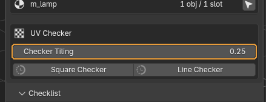
Плотность шахматной текстуры.
Когда пригодится. Крутится на лету, пока текстура включена. Мелкая клетка — точнее видно растяжение, крупная — понятнее общий масштаб.
По умолчанию: 0.25
Square Checker / Line Checker¶
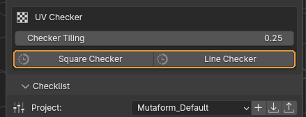
Натягивают на все материалы проверочную текстуру: клетку или полосы.
Когда пригодится. Клетка показывает растяжение и масштаб, полосы — направление развёртки и скосы. Повторное нажатие снимает текстуру.
Обратите внимание
Исходные материалы не портятся: аддон запоминает их и возвращает при выключении. Но не сохраняйте файл с включённой проверочной текстурой — велик шанс забыть и отдать ассет в таком виде.
Все проверки¶
Подписи и признак автофикса взяты прямо из аддона, поэтому таблица не может разойтись с тем, что вы видите в панели. «Меняет геометрию» означает, что фикс правит модель, а не просто помечает проблему.
Геометрия¶
| Проверка | Что ищет | Автофикс |
|---|---|---|
| Too Much Hard Edge | Ловит меш, у которого жёсткими помечены вообще все рёбра. Обычно это след импорта или случайного Shade Flat на всю модель. | да |
| N-Gons | Полигоны больше чем из четырёх вершин. Фикс триангулирует их. | да, меняет геометрию |
| Non-Manifold Geometry | Некорректная топология: рёбра с тремя и более гранями, вывернутые вееры, дыры в объёме. Фикс режет вееры и заваривает вершины только внутри каждой отдельной детали, поэтому соседние детали не слипаются. | да |
| Zero Area Faces | Вырожденные грани — площадь меньше допуска. | да, меняет геометрию |
| Zero Length Edges | Рёбра короче допуска, обычно сдвоенные вершины. | да, меняет геометрию |
| Non-Planar Faces | Четырёхугольники, вершины которых не лежат в одной плоскости. В движке такая грань разобьётся на треугольники непредсказуемо. | да, меняет геометрию |
| Concave Faces | Полигоны с вогнутым углом. | да, меняет геометрию |
| Duplicate Faces | Две грани на одном и том же наборе вершин. | да, меняет геометрию |
| Loose Geometry | Вершины и рёбра, не входящие ни в одну грань. При экспорте теряются или дают мусор. | да, меняет геометрию |
| Animation Keys | На объекте, меше или ключах формы осталась анимация — для статичного ассета это лишние данные в FBX. | да |
Трансформации¶
| Проверка | Что ищет | Автофикс |
|---|---|---|
| Unapplied Transform | Положение, поворот или масштаб отличаются от исходных. Фикс применяет трансформацию, то есть меняет координаты вершин. | да, меняет геометрию |
| Pivot Not At World Origin | Начало координат объекта не в нуле мира. | да |
| Pivot Not Centered | Начало координат не в центре габаритов. Автофикса нет намеренно: правильное место пивота зависит от того, как ассет ставится в уровне. | нет |
UV¶
| Проверка | Что ищет | Автофикс |
|---|---|---|
| Missing UV Map | У меша нет ни одного UV-набора. | нет |
| UV Sets Count | UV-наборов больше, чем разрешено параметром. | нет |
| Shells Outside 0-1 Square | Острова вылезли за первый квадрат 0-1. Для обычного ассета это ошибка, для UDIM-пайплайна проверку выключают. | нет |
| UV Set Names | Блендеровские UVMap заменяются на map1, map2 — так их ожидает Maya и часть движков. |
да |
| Overlapped UV | Налезающие друг на друга UV. Найденное разворачивается до целых островов, чтобы выделение было осмысленным. | да |
| Padding | Не проверка, а интерактивный предпросмотр отступов. В результаты ничего не пишет и в списке чек-листа не показывается. | нет |
| No Hard Edge On UV Borders | Каждое ребро на границе острова должно быть жёстким. Иначе по шву на запечённой нормали пойдёт градиент. | да |
| Random Sharp | Обратная проверка: жёсткие рёбра без границы развёртки под ними. Такое ребро создаёт лишний шов в нормалях. | да |
| Unaligned UV Edges | Границы островов, отклонившиеся от осей на доли градуса, у в остальном прямоугольных развёрток. На глаз незаметно, а текстура по такому краю получается рваной. | да |
Именование¶
| Проверка | Что ищет | Автофикс |
|---|---|---|
| Object Name Pattern | Имя объекта должно совпадать с регулярным выражением. | да |
Материалы¶
| Проверка | Что ищет | Автофикс |
|---|---|---|
| Missing Material | У объекта или части его граней не назначен материал. | нет |
| Material Count | Материалов на одном меше больше, чем разрешено. | нет |
| Material Name | Имена материалов должны совпадать с шаблоном. | да |
Nanite¶
| Проверка | Что ищет | Автофикс |
|---|---|---|
| Nanite Closed Geometry | Открытая оболочка должна быть утоплена в соседнюю геометрию. Ловит накладки, висящие в воздухе, и те, что дотянулись до поверхности не целиком: в Unreal на таком месте Nanite покажет дыру. | нет |
Как это выглядит на модели¶
Слева — что подсвечивается, когда нажимаешь на строку результата. Справа — что осталось после Fix Me. Все кадры сняты настоящим прогоном валидатора на специально сломанной геометрии.
N-Gons¶
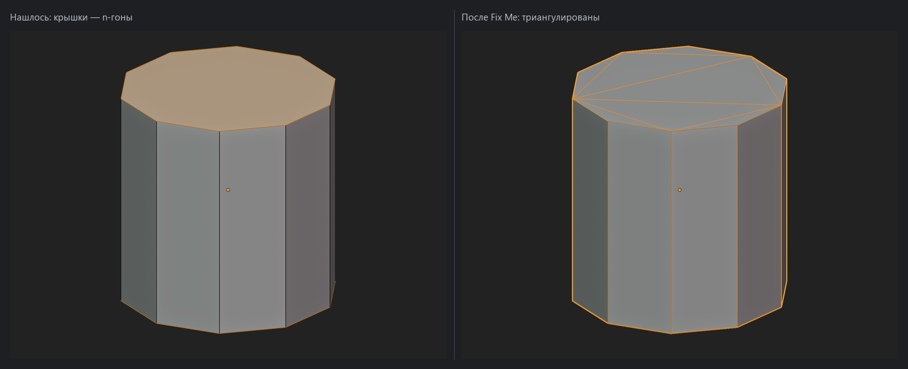
Крышки цилиндра — полигоны из десяти вершин. Автофикс триангулирует их; боковые четырёхугольники не трогает.
Loose Geometry¶
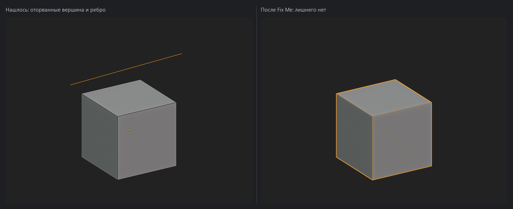
Вершина и ребро, не входящие ни в одну грань. В сцене их не видно — пока не включишь каркас или не нажмёшь на строку результата.
Non-Manifold Geometry¶
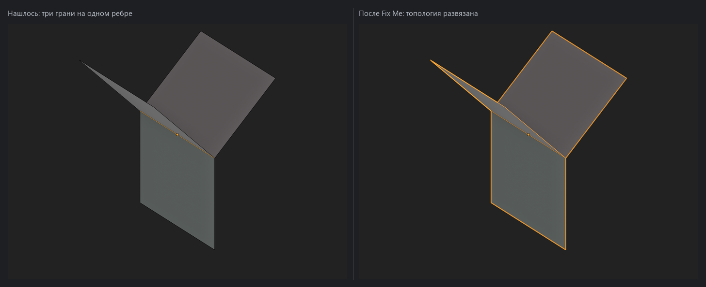
Три грани, сходящиеся на одном ребре. Подсвечено именно ребро — по нему сразу понятно, где деталь собрана неправильно.
Concave Faces¶
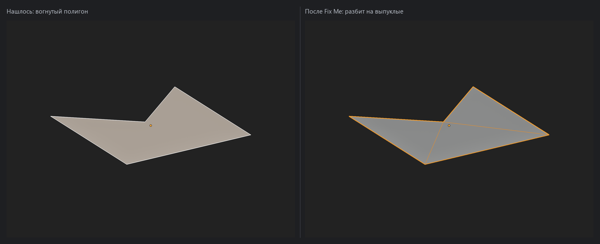
Полигон с вогнутым углом. Фикс разбивает его на выпуклые.
Non-Planar Faces¶
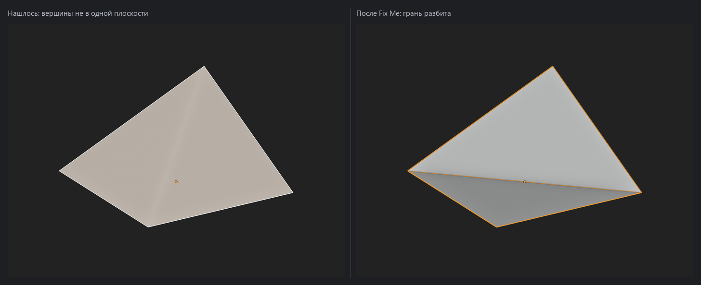
Четырёхугольник, у которого одна вершина поднята над плоскостью остальных. Фикс разбивает грань, чтобы движку нечего было додумывать.
Zero Area Faces¶
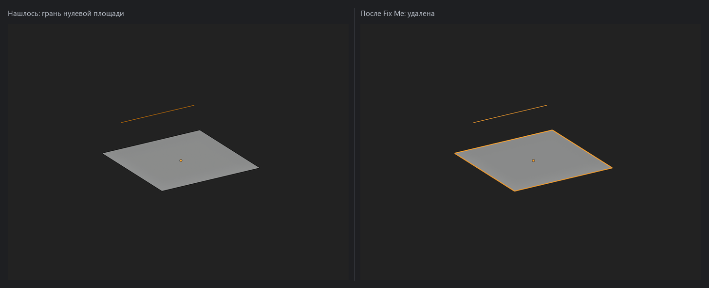
Грань нулевой площади: две её вершины лежат в одной точке. На модели такая грань не видна вовсе, а в экспорте даёт мусор.
Zero Length Edges¶
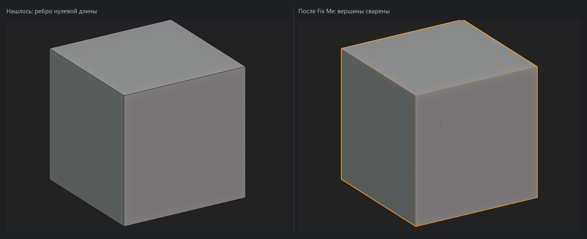
Ребро между двумя совпадающими вершинами. Фикс сваривает их.
Duplicate Faces¶
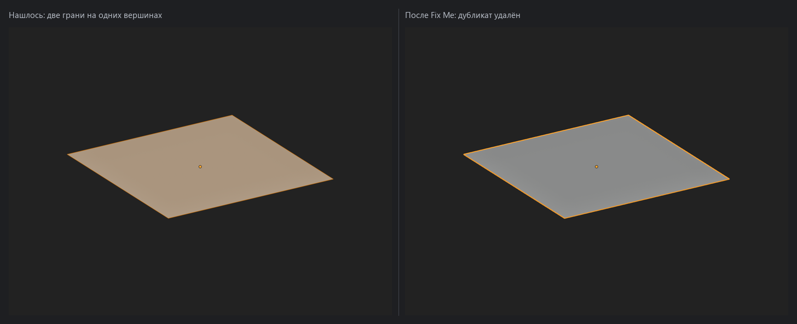
Две грани на одном и том же наборе вершин. Внешне модель выглядит нормально, а при запекании такие грани дерутся за одни и те же тексели.
Too Much Hard Edge¶
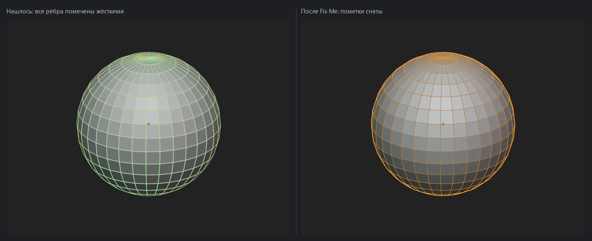
Сфера, у которой жёсткими помечены все рёбра до единого. Фикс снимает пометки, и сглаживание возвращается.
Pivot Not Centered¶
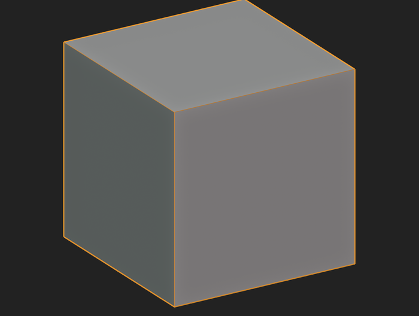
Начало координат объекта стоит в стороне от геометрии. Автофикса нет намеренно: куда должен смотреть пивот, зависит от того, как ассет ставится в уровне, и угадывать за художника аддон не берётся.
Show Overlaps¶
Слева обычный вид развёртки: налезание есть, но глазом его не поймать. Справа включён Show Overlaps — пересечение залито цветом.
Show Padding¶
Справа помечены острова, у которых при заданном размере текстуры не хватает запаса до соседей. При запекании такие острова потекут друг в друга.
Nanite Closed Geometry¶
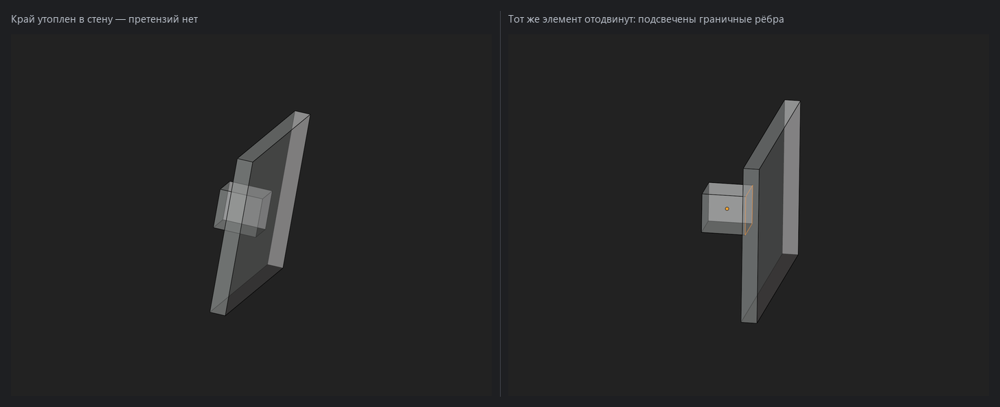
Слева накладка утоплена в стену: её открытый край оказался внутри соседней геометрии, и претензий нет. Справа тот же элемент отодвинут — край повис в воздухе, и проверка подсветила граничные рёбра. Сообщение бывает двух видов. «Sealed by nothing» — оболочку не закрывает ничто, как на правом кадре. «Not fully embedded» — край дотянулся не весь, и рядом указан самый большой зазор в миллиметрах; так бывает у наклонённой накладки, у которой один угол вышел наружу. Автофикса нет: подвинуть или дотянуть геометрию может только человек.
Страница собрана из файла content/qc-validator.ru.yml. Снимки сделаны в Scene QC Validator by Mutaform Studio 1.9.2.